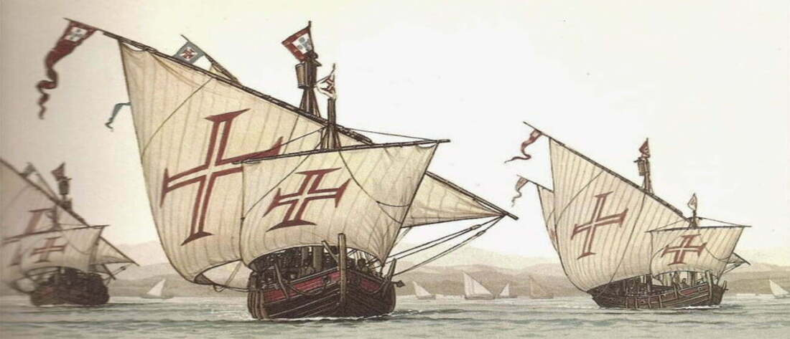

A busca por especiarias, metais preciosos e novas rotas comerciais dominava a agenda das potências ibéricas. Portugal, já consagrado nas navegações africanas, pretendia alcançar as Índias contornando a África. A frota de Cabral, composta por 13 naus e cerca de 1.200 homens, partiu de Lisboa em 9 de março de 1500, munida de objetivos comerciais e religiosos, incluindo a propagação do cristianismo.
Ao largo do Atlântico Sul, as correntes e ventos desviaram a rota convencional, conduzindo os navegadores a avistar, em 22 de abril, um monte que batizaram de Monte Pascoal. Esse desvio, se acidental ou intencional, revelou o vasto território que se tornaria a futura colônia brasileira.
Em março de 1500, Pedro Álvares Cabral partiu de Lisboa com 13 naus e cerca de 1.200 homens, enviados por D. Manuel I para buscar novas rotas e riquezas nas Índias. Oficiais experientes como Nicolau Coelho e Bartolomeu Dias garantiram a habilidade náutica da frota, que seguia rotas favoráveis ao vento no sul do Atlântico. Na tarde de 22 de abril de 1500, a vigia notou um monte arredondado — o Monte Pascoal — e a esquadra ancorou em uma enseada próxima, batizada de Porto Seguro. O local oferecia água doce e abrigo, tornando-se o ponto ideal para o primeiro desembarque.
